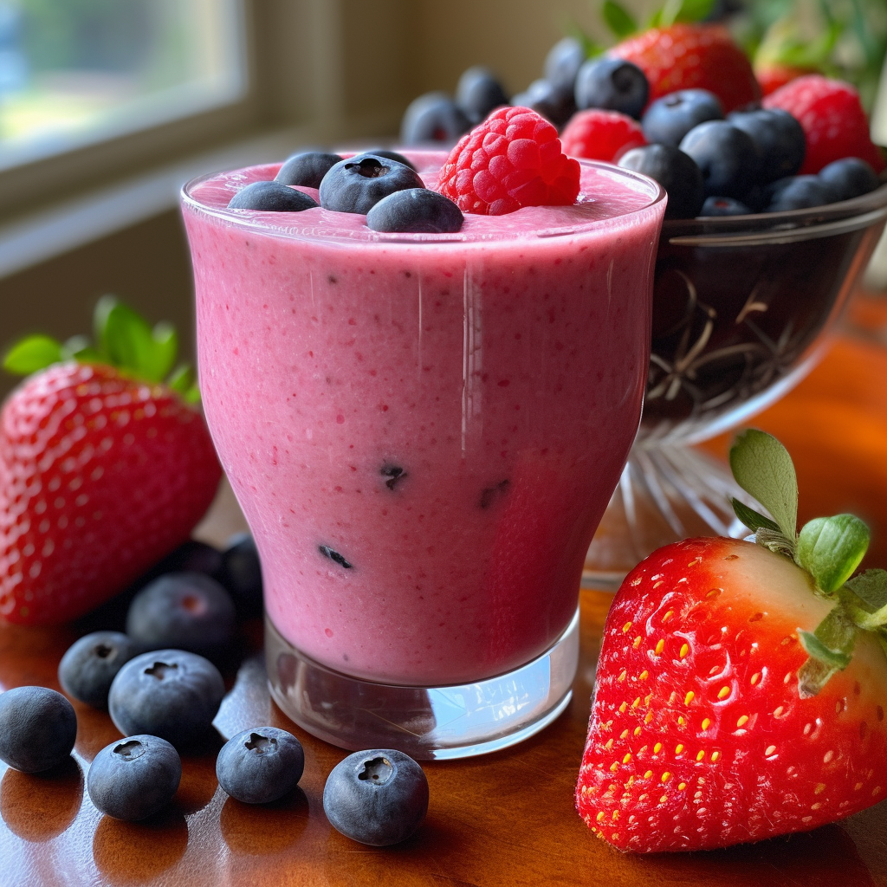

Berry Blast Smoothie

Description
The Berry Blast Smoothie is a refreshing and vibrant drink packed with the natural sweetness of frozen berries and bananas, blended with creamy yogurt and your choice of milk or juice. Perfect for a quick, nutritious boost any time of day!
Ingredients
- 1 cup frozen mixed berries
- 1 banana
- 1/2 cup yogurt
- 1/2 cup milk or juice (adjust for desired consistency)
Optional
- Honey or sweetener (optional, to taste)
Steps
- Prepare Ingredients: Gather 1 cup of frozen mixed berries, 1 banana, 1/2 cup of yogurt, and 1/2 cup of milk or juice.
- Combine Ingredients: Place the frozen berries, banana, yogurt, and milk or juice in a blender.
- Blend: lend on high until smooth and creamy.
- Adjust Consistency: Cf the smoothie is too thick, add more milk or juice and blend again until you reach the desired consistency.
- Sweeten: Taste the smoothie and add honey or sweetener if desired, then blend briefly to mix.
- Serve: Pour into a glass and enjoy immediately.